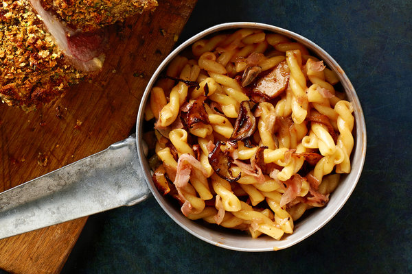

Macaroni Milanaise

This is a dish that originated in ‘‘The Escoffier Cookbook’’ as a ‘‘garnish’’ for lamb chops: macaroni and cheese, essentially, for fancy people.
Ingredients
- ½ pound dried macaroni pasta
- 4 thin slices ham
- 3-4 small mushrooms
- 2 tablespoons tomato purée
- 2 tablespoons Madeira
- 3 tablespoons grated Parmesan cheese
- 3 tablespoons grated Gruyère cheese
- 2 tablespoons unstalted butter
- ½ teaspoon ground nutmeg
- Kosher salt and freshly ground black pepper to taste
Steps
- Set a large pot of heavily salted water over high heat, and allow it to come to a boil.
- Add the pasta to the water, and cook it until it is just shy of tender, according to the instructions on the box.
- Meanwhile, put the ham, mushrooms and tomato purée in a small sauté pan, and pour the Madeira over the top. Cook over medium heat until the liquid has reduced to a glaze, the ham is heated through and the mushrooms are beginning to brown. Turn the heat off under the pan, and set aside.
- Reserve a cup of the pasta water, and drain the pasta well. Return the pasta to the pot, then add the cheeses and butter, and stir to combine. Add the seasonings, and stir some more, adding, if necessary, a little of the reserved pasta water to loosen the pasta and help melt the cheeses. Add the mushroom mixture, and stir to combine. Taste for seasoning. Serve with salad, or as a ‘‘garnish’’ for roasted or sautéed lamb.
Return Home